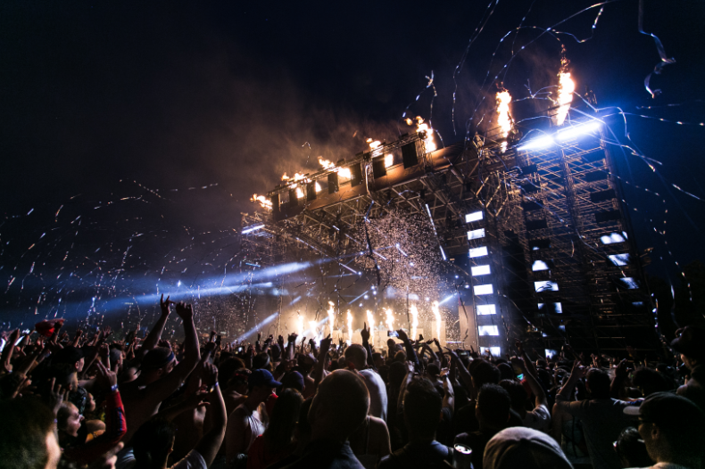
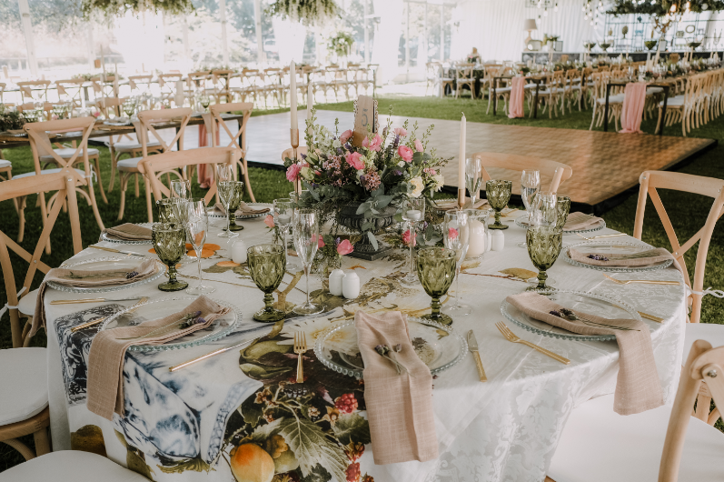
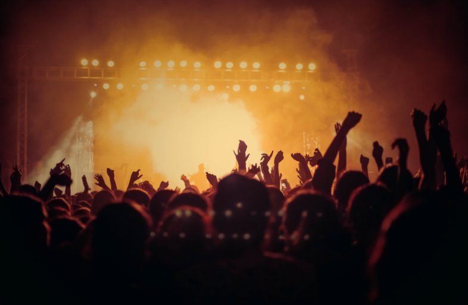
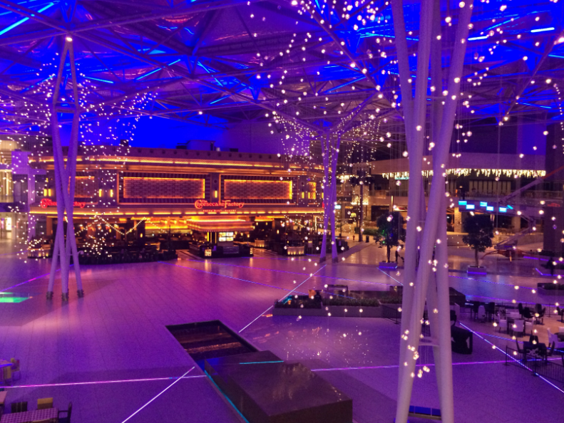

In questa coinvolgente immagine, catturata dal vivo durante un concerto
musicale, lo spettatore viene trasportato nel cuore dell'azione, immerso nell'energia e
nell'entusiasmo della folla. Dal punto di vista del pubblico, lo scatto abbraccia la vastità
dell'evento, con la scena che si anima di luci vivide e suoni vibranti. Le espressioni entusiastiche
delle persone, illuminate dalle luci dello spettacolo, narrano storie di emozione e passione, mentre
il palcoscenico si erge al centro della composizione, simbolo di unione e celebrazione collettiva.
Attraverso questa fotografia, il fotografo cattura non solo l'essenza del concerto, ma anche il
legame unico che si forma tra artisti e pubblico, creando un'esperienza visiva che risuona con
l'energia palpabile di un momento indimenticabile.

In questa raffinata composizione fotografica, il tavolo per il matrimonio si
presenta come un'opera d'arte, meticolosamente apparecchiato con dettagli eleganti e raffinati. La
disposizione dei posate, delle tovaglie di lino e delle candele profumate crea un'atmosfera di lusso
e sofisticazione, mentre gli elementi decorativi floreali aggiungono un tocco di freschezza e
romanticismo all'ambiente. Ogni elemento è disposto con cura e precisione, riflettendo l'impegno e
l'attenzione per ogni singolo dettaglio da parte degli organizzatori. La luce soffusa delle candele
e la delicatezza dei fiori conferiscono al tavolo un'aura di intimità e romanticismo, creando il
contesto perfetto per un momento così speciale e memorabile come un matrimonio elegante.

In questa coinvolgente immagine, lo spettatore è trasportato direttamente nel
cuore pulsante di un concerto musicale emozionante. Con lo sguardo dal punto di vista del pubblico,
ci troviamo immersi nell'atmosfera vibrante e piena di energia di un evento dal vivo. Le luci
vivide, le ombre danzanti e le espressioni entusiastiche delle persone dipingono un quadro di pura
eccitazione e passione per la musica. Ogni dettaglio, dalle silhouette scure dei musicisti sul palco
fino alle figure in movimento della folla, contribuisce a catturare l'intensità e la magia di questo
momento fugace. In questa foto, il fotografo coglie l'essenza stessa dell'esperienza di un concerto,
trasmettendo al pubblico la sensazione di essere parte di qualcosa di straordinario e
indimenticabile.

In questa suggestiva immagine, il silenzio avvolge la sala dopo il trascorrere
di una festa di compleanno indimenticabile. Le luci soffuse danzano delicatamente nell'aria, creando
un'atmosfera di magia e nostalgia. I rimasugli della festa si fondono con la quiete della notte,
mentre gli addobbi festosi e le luci scintillanti aggiungono un tocco di eleganza e calore alla
scena. Ogni dettaglio, dalle decorazioni appese ai lampadari alle candele ancora accese sul tavolo,
racconta la storia di momenti felici e di gioia condivisa. In questa foto, il fotografo cattura
l'essenza effimera di una festa, trasmettendo una sensazione di serenità e di dolce malinconia che
pervade lo spazio dopo la fine dei festeggiamenti.